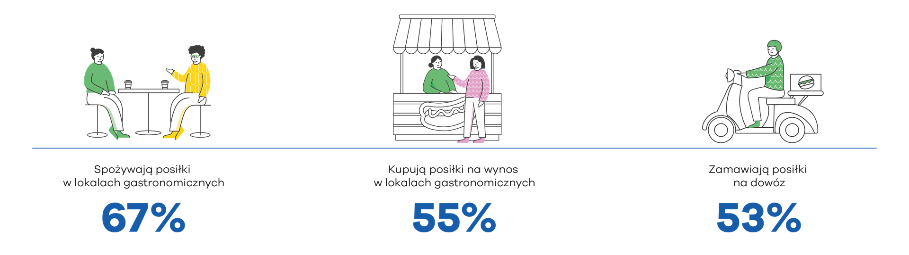
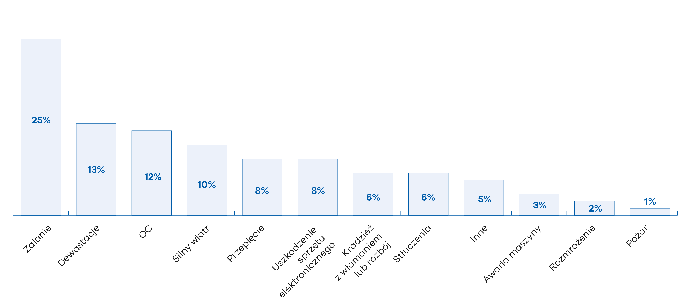

Restauracje, bary, puby, kawiarnie, punkty gastronomiczne
*źródło: opracowanie własne na podstawie danych za 2022 rok z raport GUS „Rynek gastronomiczny w Polsce” wyd. BROG B2B
Polacy, którzy deklarują korzystanie z usług gastronomicznych w 2023 roku*
*źródło: „Rynek gastronomiczny w Polsce” wyd. BROG B2B
Czynniki zewnętrzne i zdarzenia losowe, np. pożar, zalanie, wiatr, przepięcie, uderzenie pioruna
Mogą spowodować poważne straty materialne i finansowe, np. w kuchni może wybuchnąć pożar, od którego zajmie się cała restauracja. Wiatr może uszkodzić wyposażenie znajdujące się na zewnątrz w ogródkach restauracyjnych.

Włamania, kradzieże i dewastacje
Mogą powodować straty finansowe oraz uniemożliwić normalne funkcjonowanie biznesu np. kradzież sprzętu i towarów uniemożliwi przygotowanie posiłków; zniszczenie łazienki spowoduje konieczność jej remontu.
Ryzyka wynikające z odpowiedzialności związanej z oferowaniem produktów
Mogą narazić właściciela na poważne straty finansowe, związane z koniecznością wypłaty odszkodowania, np. za zatrucia bakteryjne w wyniku spożycia oferowanych produktów.
Przyczyny szkód w UNIQA w branży gastronomicznej (w 2023 r.)*
* źródło: statystyki wewnętrzne UNIQA
Wybrane zdarzenia w Polsce w 2022 r.**
** źródło: dane Państwowej Straży Pożarnej
Przedmiot ubezpieczenia
Ryzyka w branży
Sugerowany zakres ochrony
Przedmiot ubezpieczenia
Ryzyka w branży
Sugerowany zakres ochrony
Przedmiot ubezpieczenia
Ryzyka w branży
Sugerowany zakres ochrony
W trakcie rozmowy poinformuj klienta o korzyściach związanych z posiadaniem ubezpieczenia. Podkreśl, że polisa pozwoli mu pokryć straty, które zostały objęte zakresem ubezpieczenia i nie podlegają wyłączeniu, a które wynikają ze szkody i pomoże przywrócić funkcjonowanie działalności. To z kolei zapewni ciągłość prowadzenia biznesu i zniweluje zagrożenie odejścia klientów.

Zbierz informacje, niezbędne do przygotowania dobrej oferty ubezpieczeniowej, przed spotkaniem lub w czasie rozmowy z klientem.
Na początku rozmowy spróbuj ustalić, czy klient ma lub miał ubezpieczenia, a jeśli tak, to jakie. Warto wiedzieć, jakie są jego dotychczasowe doświadczenia z ubezpieczeniami, aby skutecznie pokonać ewentualne obiekcje klienta i rozwiać wszelkie wątpliwości niezbędne do podjęcia decyzji.
Jeśli klient ma złe doświadczenia z ubezpieczeniem, wątpi w jego skuteczność lub ma inne wątpliwości, przedstaw mu fakty i przykłady.
Wspomnij także o zaletach ubezpieczenia małych i średnich firm w UNIQA, które są ważne dla tej branży
By zbudować relację z klientem, możesz również zapytać: